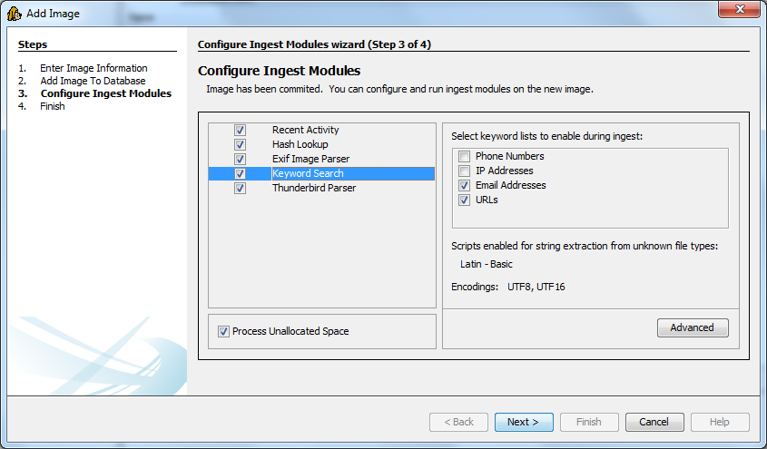

Adding An Image
There are several ways to add an image to the currently opened case:
- Go to "File" and select "Add Image..."
- Select the icon on the toolbar
After that, a "Add Image" wizard dialog will show up. Then follow these following steps:
- Select "Image Type", then enter the "Image Path" to the image that you want to analyze (you can also use the "Browse" button to browse the location of your image). Also specify the timezone that you want. When everything is completed, press "Next" button.

- Autopsy needs to analyze the image to populate its database with file system metadata. If you have configured hash databases, you will be given the option of looking up files in the hash database during the ingest. Press the "Create Database" button to create the database. When the database creation process is done, you can press the "Next" button.

- After the database is created, the image can be analyzed. You will be given the option to add another image or start the analysis.

Note that Autopsy will store the path to the image in its configuration file. If the image moves, then Autopsy will give an error because it can't find the image file.